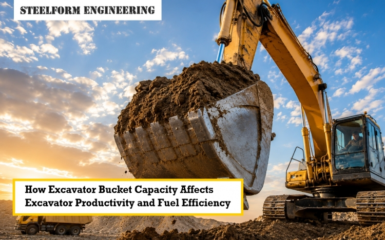

In excavating and civil construction industries, the performance of an excavating attachment needs to be matched to the work to be done so as to ensure that you have a return on investment. At Steelform Engineering, we supply high-performance, custom-made excavating buckets that are designed to give you as much payload effectiveness as possible while providing longevity of use for the machine. In this blog, we will explain the science of bucket capacity and how to choose the correct one for your fleet in detail.
With many excavator operators, the first assumption is that a larger excavator bucket would produce greater production. Unfortunately efficiency of earthmoving equipment requires a delicate balance between weight, hydraulic power, and cycle speed.
When you need to fill a truck, having a small bucket will make more than one trip to fill the truck, extending the cycle time and providing long wait times for transport drivers. Conversely, an oversized bucket will slow down the hydraulic cycle speed of the machine, struggling with lifting the load which will then impede the swing speed of the machine and diminish whatever volumetric benefit you had assumed.
Excavator Fuel consumption is correlated with engine loading. For example, if you have an oversized bucket or large heavy mud bucket loaded with wet clay, when you use the hydraulic system, it will operate at maximum relief pressure continuously. Continuous maximum-load operation will result in:
To maximize the productivity of your excavator, bucket selection should be looked at as a formula that takes into account both the operating capacity of the machine and material density.
The density of the material changes dramatically based on the application.
For example, a general-purpose bucket will be efficient at lifting dry sand; however, if you were to switch to heavy, blasted rock, then you would need to use a rock bucket.
|
Material Type |
Average Density (kg/m3) |
Recommended Bucket Type |
Selection Risk |
|
Topsoil / Dry Clay |
1,200 – 1,400 |
GP Bucket / Mud Bucket |
Low risk, high volume |
|
Wet Clay / Mud |
1,600 – 1,800 |
Mud Bucket / Custom |
Sticky material reduces dump efficiency |
|
Blasted Rock / Granite |
2,400 – 2,700 |
Rock Bucket (Heavy Duty) |
High weight requires smaller capacity |
When you use a very large and heavy bucket, which is meant to hold lots of dirt, and try to scoop up blasted rock, you will immediately overload the machine beyond its safe weight limit (SWL) and cause the machine to tip over or become unsafe.
To get the most out of your investment you need to use attachments that are specialized for the type of application they are being used in. By choosing the correct type of excavator attachment, you will be able to move the material without causing damage or putting more stress on the carrier machine than necessary.
A greater amount of time you spend on a poorly loaded or overloaded machine means you would have spent hundreds of dollars, including fuel, operator wages, and structural maintenance, throughout the entire duration of a project.
Earthmoving equipment efficiency relies solely on precise engineering. To maximize your ROI, you should have a trusted excavator bucket selection guide like Steelform Engineering for selecting excavator buckets to ensure you have the appropriate attachment for the job (i.e., high-volume GP bucket, heavy-duty rock bucket, wide mud bucket, or specialized sorting buckets). Investing in precision-engineered, custom excavator buckets at Steelform Engineering will help your fleet achieve optimal excavator attachment performance, resulting in significant reductions in fuel consumption on excavators and improving long-term project profitability.
At Steelform Engineering we design custom-built excavator buckets for Australian conditions. By looking at your machine specifics (i.e., typical material types) and wear specifications, Steelform Engineering provides attachments that maximise your payload while minimising the amount of fuel consumed. To optimise your fleet performance contact our team at Steelform Engineering for our custom bucket selection guide and find a suitable match for your next project.